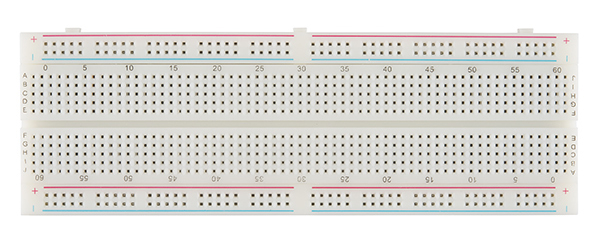

Descrição do Produto
Esta breadboard com 800 pontos de ligação tem o tamanho ideal para testar os seus protótipos de electrónica. O facto de ser transparente permite validar visualmente se os contactos estão em boas condições. Possui encaixes laterais que permite associar várias breadboards quer na horizontal quer na vertical.
Detalhes do Produto
- Material: Material do produto
- Cor: Branca
- Horizontal: numerado de 0 a 60
- Vertical: marcado alfabeticamente de A a J
- Dimensões: 8.2cm x 6.2cm